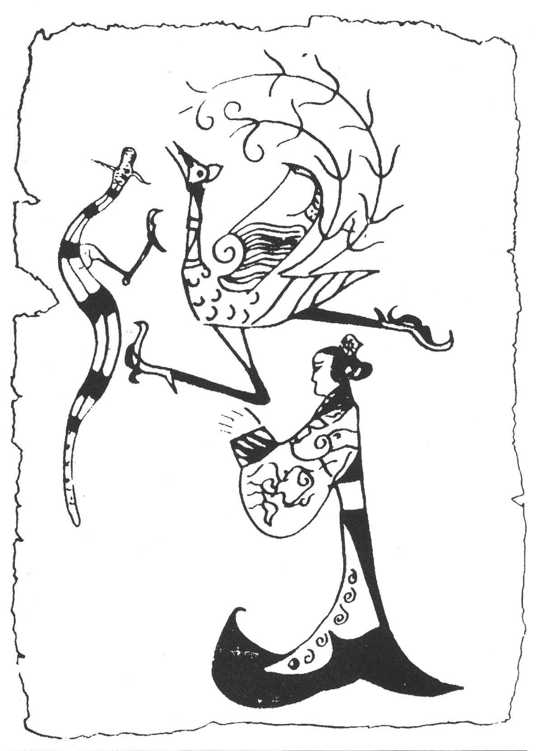
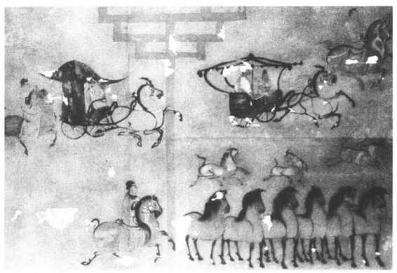

帛，是丝织物的总称，凡画在丝织物上的绘画，都可以称为“帛画”，但今天是专指考古发掘出来的画在丝绢上用于殉葬的绘画。发现最早的是长沙战国楚墓帛画。
《人物夔凤图》，纵28厘米，横20厘米。1949年出土于长沙陈家大山楚墓。（图13—1）画一女子侧身而立，头挽垂髻，细腰大袖，长衣曳地，双手前伸作合掌状。女子前上方，画有夔龙和凤鸟各一。根据发现的类似作品来考察，画中的女子应为墓室主人，龙和凤为吉祥通神动物，在引导死者灵魂升天。

图13-1 人物夔凤图
《人物御龙图》，纵37.5厘米，横28厘米，1973年发现于长沙子弹库楚墓中。（彩图17）画一男子侧身直立，峨冠大袖，腰佩长剑，手执缰绳，驾龙遨游。龙首高昂，身平伏而尾翘，像一条船。龙尾上站立一鹭，仰首向天，龙身下有一鲤鱼，上方则有舆盖。人物衣着及手执的缰绳均有飘带，仿佛随风拂动，造成一种向前行进的动势。远古传说中有黄帝乘龙上天之说，此画所反映当是人们死后，灵魂借助于神龙以达天国。
这两幅战国帛画，均以单线墨笔勾勒，后者并加以平涂兼渲染设色，这一基本的绘画形式和技巧，一直沿用到今天，可以说我国绘画的基本特征，早在战国时代就已经奠定了。女子的形象刻画比较抽象、概念化，男子虽为侧面，而眉目清秀，就较为生动具体了。他们均为墓室主人，也可以说是我国最早的人物肖像画。刘向《说苑》记载：“齐王起九重台，召敬君图之。敬君久不得归，思其妻，乃画其妻对之。”《孔子家语》中说到孔子参观周的明堂，见壁上画有“尧、舜之容，桀、纣之像”，“各有善恶之状”。可知人物肖像画也有很久的历史，参看这两幅帛画能了解到当时的确能达到这一水平。
帛画在汉代有了进一步的发展，1972年和1973年长沙马王堆一号和三号汉墓出土了五幅，1976年山东临沂金雀山九号汉墓也出土了一幅。内容除了继承战国帛画引导死者灵魂升天的主题外，还有夸耀死者生前的享乐生活及“养生之道”的气功强身图等。其中保存最完好、艺术也最精美的一幅帛画，是马王堆一号墓出土被释作“非衣”的一件。
马王堆一号墓出土有一具完整的女尸，非衣即覆盖在她的彩漆棺椁上，呈“T”形，纵205厘米，上部横92厘米，下部横47.7厘米。画面分上、中、下三层，被认为表现了天上、人间、地下三个世界。（彩图18）天上部分，画有日、月、星辰和象征日、月的金乌、玉兔、蟾蜍。日、月之间有一人首蛇身形象，或认为是人类的创造者和保护神女娲。此外还有阙门及守门人（帝阍）等。人间部分上层，画一老年妇人，衣着华丽，手扶拐杖，步履蹒跚，而显现出雍容华贵、仪态尊荣，应是死者墓主人肖像。老妇身后有三个侍女，一字并列肃立，身前两个侍女举案跪迎，衬托出老妇的特殊身份地位。下层描绘厨房情景，有厨师及尊罍之属。地下部分画一身材肥短“巨人”，手托一板状物象征大地，名曰禺强。全画从上到下，龙蛇蟠曲，将三部分联系成一个整体，空隙间还补充画有鱼、龟、猛兽、飞禽及磬、璧、铎等形象。非衣所描绘的世界，充满着神话想象，反映了当时人们的信仰，对宇宙的解释。在表现手法上，以线描为基，敷以浓重色彩；红白为基调，间以青蓝，璀璨夺目。造型写实和夸张相结合，而又富有装饰特色。墓主人肖像刻画，仍沿袭战国帛画侧影式，简略朴拙，但动作神态生动，和出土女尸相比，真还有些相似。马王堆三号墓出土非衣，主像为一男性，身材较胖。红袍佩剑，袖手缓步，气度从容。面像采用四分之三侧面，是人物肖像画的一个突破。
西汉帛画的发现，弥补了中国绘画史一大空缺，它所表现的高度绘画技巧和艺术水平，显示了古代画工的智慧和才能。因为他们的地位低下，不可能在画上留下姓名。在墓室中埋放帛画，一直延续到唐代和辽金。出土的作品有新疆阿斯塔那唐墓绢画，辽宁法库叶茂台辽墓绢画。随着时代的变迁，这些绢画无论在形式、内容或技法、技巧上，都发生了很大的变化。
壁画是指直接画在墙面上的绘画，按其用途和绘制地点，可分为殿堂壁画、寺观壁画、石窟壁画和墓室壁画。
据文献记载，自周至汉代，殿堂壁画是相当兴盛的，除孔子观乎明堂见周代壁画外，屈原《天问》中反映的楚国先王庙宇及公卿祠堂里的壁画，内容也十分丰富，并且规模宏大。秦、汉时宫殿中的壁画，除了历史和神话题材外，还有当代的人物肖像，如麒麟阁和云台的功臣图。壁画除了起装饰建筑作用之外，还是封建统治者宣传教育的重要工具，如官署中画古名臣像，为官吏们树立楷模，画时贤像以进行褒奖，学校中画孔子及其门徒像，在于教育士子。由于时代的久远，地面建筑毁坏，这些壁画已不复存在。近年考古工作者在秦代咸阳宫遗址清理中，曾发现有残存的壁画车马图等，可印证文献的记载。
汉代能保存至今的主要是墓室壁画，在河南洛阳和密县、河北望都和安平、山东梁山、山西平陆、辽宁辽阳和金县、甘肃酒泉、内蒙古和林格尔及托克托等地都曾发现过汉代的墓室壁画。墓室壁画的内容十分丰富，主要有：（1）引导死者灵魂升天，这点与帛画内容一脉相承。如洛阳西汉卜千秋夫妇墓的《升仙图》，配合墓主人形象有日、月、流云、四神（青龙、白虎、朱雀、玄武）及其他神话形象。（2）车马出行，以炫耀死者生前身世显赫，如辽阳北园汉墓的《出行牧马图》，奔腾有势；和林格尔汉墓中，描绘主人生前的身世经历，出行场面宏大壮观。（图13—2）（3）衙寺属吏，如望都汉墓画有门下小吏、门下功曹、门下贼曹、辟车五百等形象，恭谨顺从的神态，十分生动。（4）饮宴百戏，以表现死者生前的享乐，死后的荣华，如密县打虎亭汉墓的《舞乐百戏图》，描绘主人饮宴宾客，除帐幔、旗帜和饮食器具陈设豪华外，在筵席前还有各种表演，如舞蹈、吹角、耍棍、跳丸、舞盘等，生动活泼，色彩浓艳，气氛热烈。此外，在表现死者生前享乐的同时，壁画还描绘了生产劳动等社会生活内容，如耕地、舂碓、庖厨、谷仓、马厩，以及城市、衙署、庄园等，在研究汉代社会历史方面，这是最真实生动的部分。墓室壁画技巧，在形象刻画上虽不及帛画精镂细刻，但由于幅面大，粗犷稚拙中，有着壮阔的气势，线条粗率似不经意，而有着朴实的天真。一般都是以线描作基础，然后平涂敷彩，有的也纯用色彩渲染，类似后世的“没骨法”。

图13-2 内蒙古和林格尔东汉墓壁画《出行牧马图》